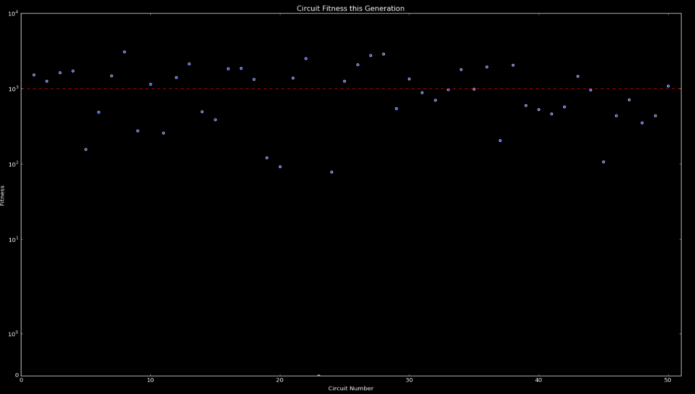
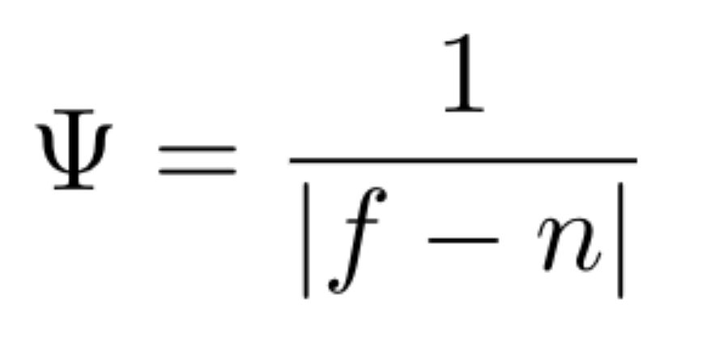
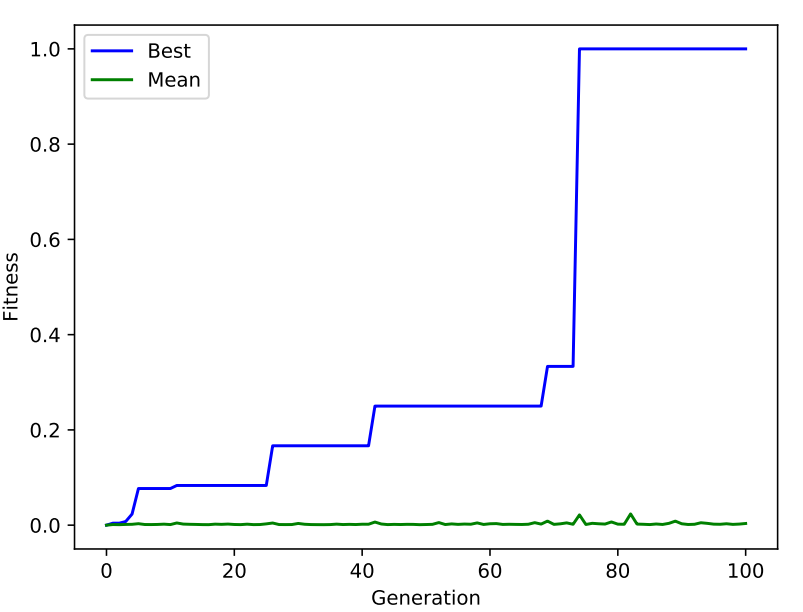
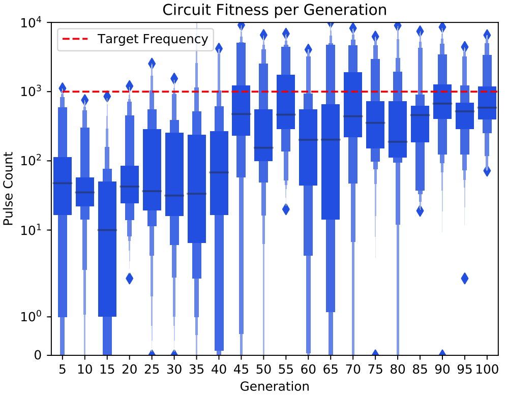

Pulse Oscillation
Generating circuits with an oscillating pulse output
Description
Among the simplest fitness functions to implement for FPGA intrinsic analog evolvable hardware is the variance maximization function. Plainly put, this function demands the maximum change, either positive or negative, of each instantaneous measurement from the microcontroller. The ultimate effect is that the amplitude of the output waveform will increase with each successive generation.
| Runtime | Population | Generations | Mutation | Crossover |
|---|---|---|---|---|
| 10-12 hours | 50 | 100 | 0.005 | 0.5 |

Fitness Function
|
 |
This fitness function simply takes the inverse of the absolute difference of the target frequency (f) and the measured frequency (n). Circuits whose measured output frequency is closer to the target frequency are assigned a higher fitness value. A special condition is set in the event that the measured output matches the target frequency, bypassing a divide-by-zero error and assigning a fitness of 1000. |
Results
|
 |
 |